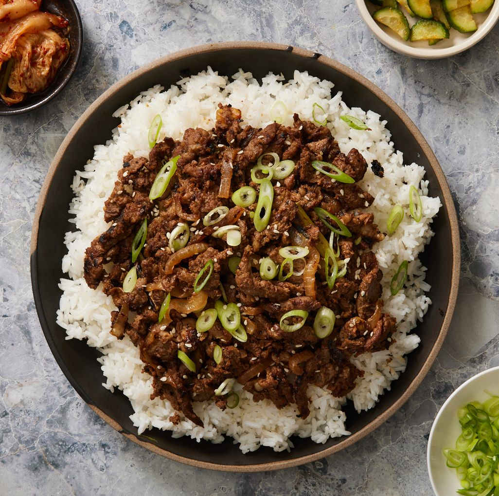

How to make Bulgogi

Bulgogi is a great tasting korean dish that everyone should try out! Here are the ingredients you will need:
Main ingredients
- 800 grams rib eye steak or top sirloin. Thinly sliced, 2mm to 3mm
- 1 onion
- 2 stalks green onion
- 1/2 carrot
- 1 Tbsp toasted sesame oil
- 1 Tbsp toasted sesame seeds
- 1 Tbsp cooking oil
Marinade ingredients
- 6 Tbsp soy sauce
- 3 Tbsp brown sugar
- 2 Tbsp rice wine (mirin)
- 1 asian pear or red apple
- 1/2 onion
- 1 Tbsp minced garlic
- 1 Tsp minced ginger
- 1/8 tsp ground black pepper
How to make it!
- Blend the marinade ingredients in a mixer or food processor until smooth. Set aside.
- Place the thinly sliced meat in a mixing bowl and pour the marinade over it.
Mix them well together while gently massaging the meat with your hands.
(Wearing a food prep glove is very handy here!)
Add the sesame oil and mix it into the meat. (I prefer adding the sesame oil separately as
opposed to mixing it in the marinade sauce. I read somewhere that the oil can prevent the other
sauce getting absorbed effectively into the meat.) Cover the bowl with cling wrap (or move the marinated
meat into a glass container with a lid) and marinate the meat for at least 4 hours in the fridge. (If you have more time,
you can also marinate it overnight to deepen the flavour even more).
- Preheat a skillet / bbq grill on medium high heat until well heated. Add the cooking oil and spread it well.
Add the meat (and vegetables) and cook it on medium high to high heat for 3 to 5 mins (until the meat and vegetables cook to your desired doneness).
Toss in the sesame seeds and stir them quickly.
- Serve the bulgogi with steamed rice and other Korean side dishes.
Take me back!